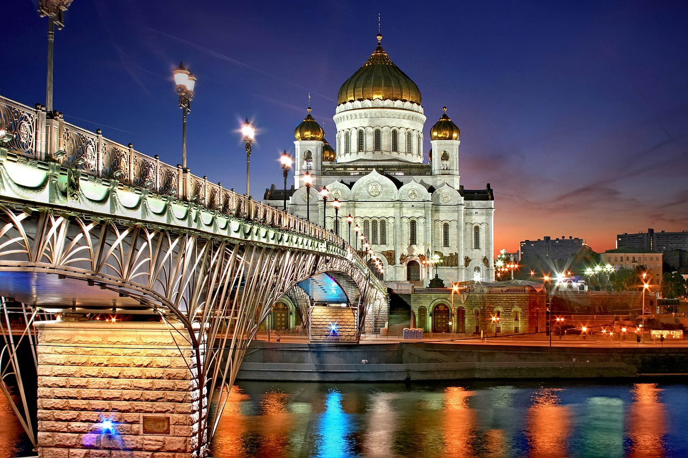
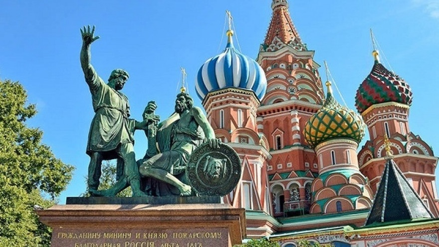

Destinations Touristiques
Découvrez Moscou et ses trésors historiques. Cette ville emblématique est riche en culture et en architecture, avec des sites célèbres tels que la cathédrale Saint-Basile et le Kremlin, qui attirent des visiteurs du monde entier.
Explorez la magnifique Saint-Pétersbourg, connue pour ses somptueux palais et ses canaux pittoresques. La ville offre une combinaison unique de beauté naturelle et d'architecture spectaculaire, avec des lieux emblématiques comme le Palais d'Hiver et la Forteresse Pierre-et-Paul.
Découvrez Kazan et ses merveilles culturelles. Cette ville est une fusion unique entre l'Orient et l'Occident, offrant une riche histoire et une diversité culturelle. Parmi les sites incontournables, on trouve le Kremlin de Kazan, un site du patrimoine mondial de l'UNESCO.

Visitez Novossibirsk et ses attractions uniques. En tant que capitale de la Sibérie, Novossibirsk est connue pour son riche patrimoine scientifique et ses nombreux musées, théâtres et galeries d'art, offrant un aperçu fascinant de la vie en Sibérie.

Admirez les paysages de Saint-Pétersbourg. Cette ville respire l'histoire à chaque coin de rue, avec ses magnifiques parcs, ses cathédrales majestueuses et ses canaux romantiques, offrant une expérience inoubliable à chaque visiteur.

Saint-Pétersbourg est une ville emblématique avec une richesse architecturale et culturelle exceptionnelle. Chaque visiteur est séduit par ses palais majestueux, ses ponts levers et ses nuits blanches inoubliables.